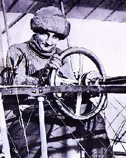

Борис Акунин
Мой календарь
Мне кажется, чем говорить дамам комплименты и помещать открытки с мимозами, лучше будет вспомнить сегодня какую-нибудь замечательную женщину - из тех, кто доказал, что эпоха мужевластия закончилась. В конце концов праздник 8 марта был придуман не для корпоративных выпивонов и тостов «за прекрасных дам», а как день солидарности и борьбы за женские права.
Замечательных женщин, вырвавших у общества права на равенство, было очень много, но я выберу француженку Раймонду де Ларош (1882–1919). Сейчас объясню почему.
Раймонда была первой женщиной, совершившей полет на аэроплане. Просто села и полетела. На какие рычаги нажимать, ей кричали снизу.
Потом долго добивалась официального признания права на полет и в конце концов преодолела все препятствия. Лицензию Раймонда получила не когда-нибудь, а именно 8 марта. Это историческое событие произошло в 1910 году.
Потом она еще много летала. Падала, калечилась, снова поднималась в воздух. Погибла при испытании нового аэроплана.
Дорогие женщины, вы созданы для счастья, как птицы для полета. Летайте! Не обязательно на аэропланах. Только, пожалуйста, не разбивайтесь.